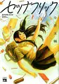

今井大輔（いまい だいすけ）
最初にみたのは、ヒルだったけど、うわすごいのんが出てきたなと思った記憶があります（すごいまんが、すごい才能、新しいジャンル、視点って感じ）。絵もきれいだしいい
クロエの流儀
こちら、あたためますか？
セツナフリック

01TBD
パッカ
ヒル
ヒル・ツー
古都ことーチヒロのことー
古都ことーユキチのことー
データベース
| タイトル | ISBN | 絵 | 作 | 発行 | URL | 紙 | 電子 | その他1 | その他2 |
|---|---|---|---|---|---|---|---|---|---|
| クロエの流儀（1） | 9784537133349 | 今井大輔 | 日本文芸社 | url | Y | 2188 | |||
| クロエの流儀（2） | 9784537135282 | 今井大輔 | 日本文芸社 | url | Y | 2402 | |||
| クロエの流儀（3） | 9784537138290 | 今井大輔 | 日本文芸社 | url | Y | 2799 | |||
| こちら、あたためますか？ | 9784408414911 | 今井大輔 | 実業之日本社 | url | Y | 3210 | |||
| セツナフリック | 9784253142113 | 今井大輔 | 秋田書店 | url | Y | 3651 | |||
| パッカ（1） | 9784098606122 | 今井大輔 | 小学館 | url | Y | 3064 | |||
| ヒル（1） | 9784107716323 | 今井大輔 | 新潮社 | url | Y | 3021 | |||
| ヒル（2） | 9784107716538 | 今井大輔 | 新潮社 | url | Y | 3022 | |||
| ヒル（3） | 9784107716781 | 今井大輔 | 新潮社 | url | Y | 3038 | |||
| ヒル（4） | 9784107717030 | 今井大輔 | 新潮社 | url | Y | 3208 | |||
| ヒル（5） | 9784107717221 | 今井大輔 | 新潮社 | url | Y | 3209 | |||
| ヒル・ツー 1 | 9784107721037 | 今井大輔 | 新潮社 | url | Y | 3241 | |||
| ヒル・ツー 2 | 9784107721471 | 今井大輔 | 新潮社 | url | Y | 3240 | |||
| ヒル・ツー 3 | 9784107721907 | 今井大輔 | 新潮社 | url | Y | 3696 | |||
| ヒル・ツー 4 | 9784107724694 | 今井大輔 | 新潮社 | url | Y | 3695 | |||
| 古都ことーチヒロのことー（1） | 9784575846843 | 今井大輔 | 双葉社 | url | Y | 2777 | |||
| 古都ことーチヒロのことー（2） | 9784575847604 | 今井大輔 | 双葉社 | url | Y | 2742 | |||
| 古都ことーチヒロのことー（3） | 9784575848045 | 今井大輔 | 双葉社 | url | Y | 2743 | |||
| 古都ことーユキチのことー（1） | 9784253141062 | 今井大輔 | 秋田書店 | url | Y | 2776 | |||
| 古都ことーユキチのことー（2） | 9784253141079 | 今井大輔 | 秋田書店 | url | Y | 2774 | |||
| 古都ことーユキチのことー（3） | 9784253141086 | 今井大輔 | 秋田書店 | url | Y | 3065 |